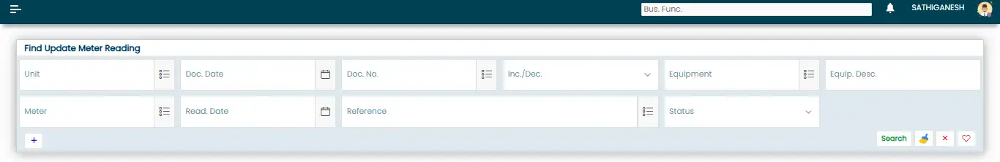
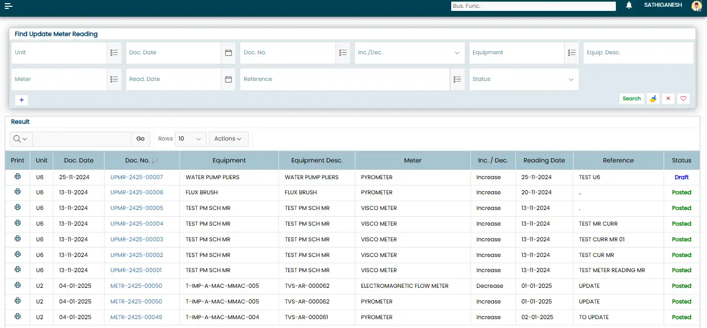
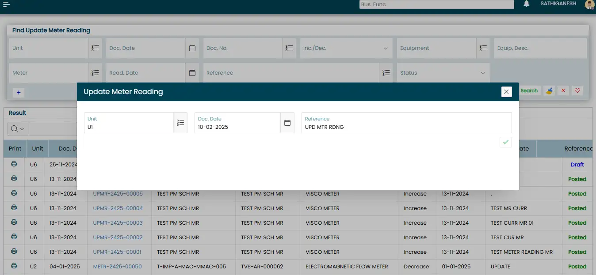
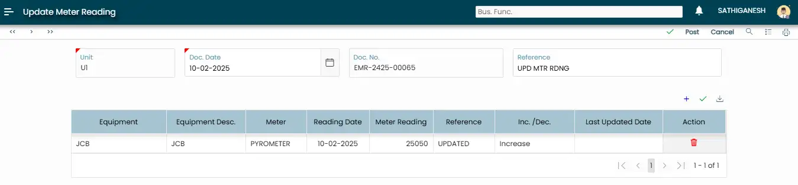

<div data-category="Plant Maintenance" data-title="Update Meter Reading" data-updated="January 27, 2026" data-contributors="RoadmapIT" data-breadcrumb="Home,Plant Maintenance,Update Meter Reading">
  <div class="page-content">
    <p>Meter readings help user to track how much the equipment is used and to plan maintenance activities based on UOM, such as miles, Meter Reading of the equipment can be updated using the following screen. The Date on which the meter reading is updated can be captured for future tracking.</p>
    <h5>Navigation path:</h5>
    <p class="fs-6">Plant Maintenance \ Transactions \ Update Meter Reading</p>
    
    <ul style="list-style-type: none; align-content: center">
      <li class="mouse-icon">Search screen displays the list of Meter reading with the relevant details and its status</li>
      <li class="mouse-icon">Click on Search to filter all the records.</li>
    </ul>
    
    <ul style="list-style-type: none; align-content: center">
      <li class="mouse-icon">User can filter the respective documents by entering the search parameters at the header.</li>
      <li class="mouse-icon">On clicking search button, system displays the results relevant to the search parameters entered.</li>
      <li class="mouse-icon">
        Using
        
        icon, entered search parameters can be cleared.
      </li>
      <li class="mouse-icon">
        To close the screen, use
        <i class="bi bi-x fs-4 mx-2 text-danger"></i>
        icon
      </li>
      <li class="mouse-icon">
        By Clicking the
        <i class="bi bi-plus fs-4 mx-2 text-primary"></i>
        Add button we can create Update Meter Reading for the required Equipment.
      </li>
    </ul>
    
    <ul style="list-style-type: none; align-content: center">
      <li class="mouse-icon">Enter / Select the Unit.</li>
      <li class="mouse-icon">Enter / Select the Doc Date.</li>
      <li class="mouse-icon">Enter the reference.</li>
      <li class="mouse-icon">
        Click on
        <i class="bi bi-check-lg fs-4 mx-1 text-success"></i>
        to create the Update Meter Reading record
      </li>
    </ul>
    
    <ul style="list-style-type: none; align-content: center">
      <li class="mouse-icon">
        Click
        <i class="bi bi-plus fs-4 mx-2 text-primary"></i>
        to add
      </li>
      <li class="mouse-icon">Enter/Select the Equipment</li>
      <li class="mouse-icon">Enter/Select the Meter.</li>
      <li class="mouse-icon">Enter the Reading Date and Meter Reading.</li>
      <li class="mouse-icon">
        Click
        <i class="bi bi-check-lg fs-4 mx-1 text-success"></i>
        to save
      </li>
      <li class="mouse-icon">Click on Post button to post the record</li>
    </ul>
  </div>
</div>
